Știm, dar nu facem
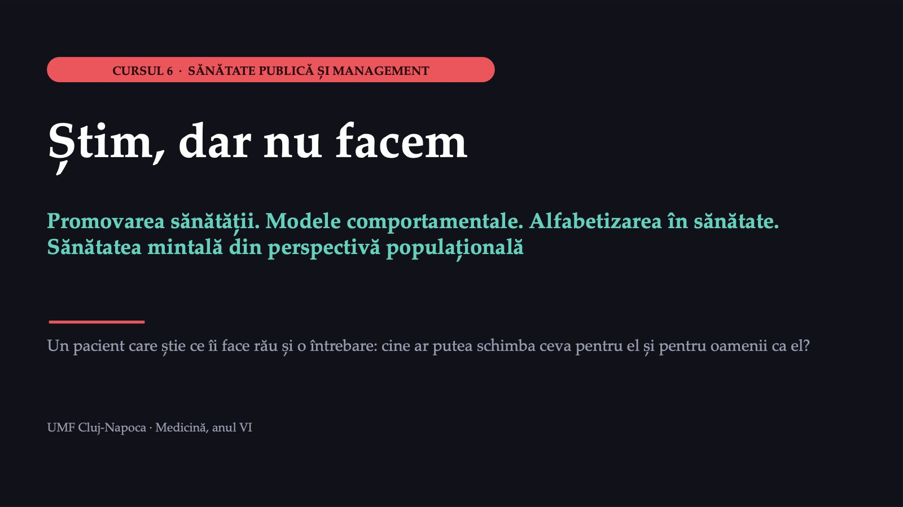
1 / 48Domnul Vasile, 56 de ani
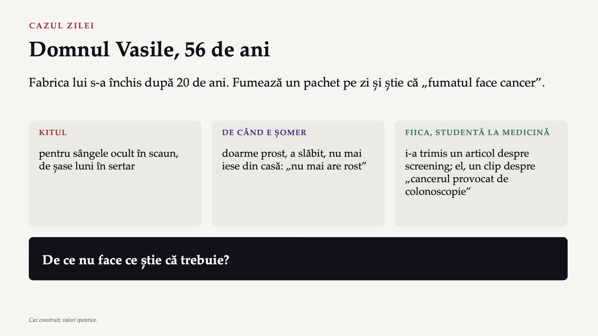
2 / 48De ce nu a făcut testul?
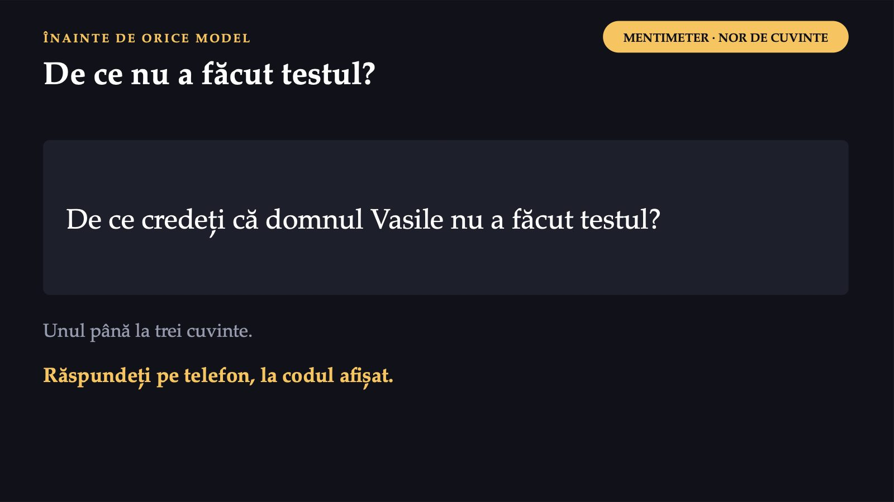
3 / 48Problema lui nu este lipsa informației
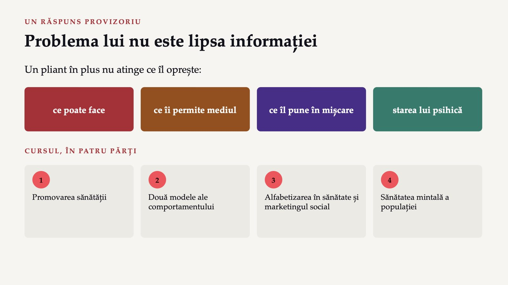
4 / 48Promovarea sănătății: mai mult decât informare
 5 / 48
5 / 48Ottawa, 21 noiembrie 1986
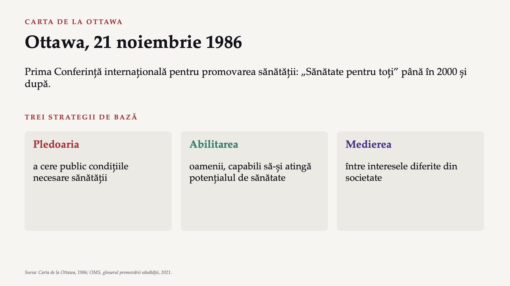
6 / 48Ce cere Carta de la Ottawa
![CINCI DOMENII DE ACȚIUNE Ce cere Carta de la Ottawa 1 Politici publice sănătoase: legi și taxe care fac ușoară alegerea sănătoasă. 2 Medii favorabile: spații fără fum, orașe bune de mers pe jos. 3 Acțiunea comunitară: comunitățile își stabilesc propriile priorități. 4 Abilitățile personale: educație și alfabetizare în sănătate. 5 Reorientarea serviciilor: fiecare consultație, ocazia unui sfat scurt. Primele două acționează asupra tuturor, fără să ceară fiecăruia motivație sau timp. Sursa: OMS, glosarul promovării sănătății, 2021; OMS, „Tackling NCDs”, 2024.](diapozitive/C06/007.jpg) 7 / 48
7 / 48Ce se face și ce ar ajuta
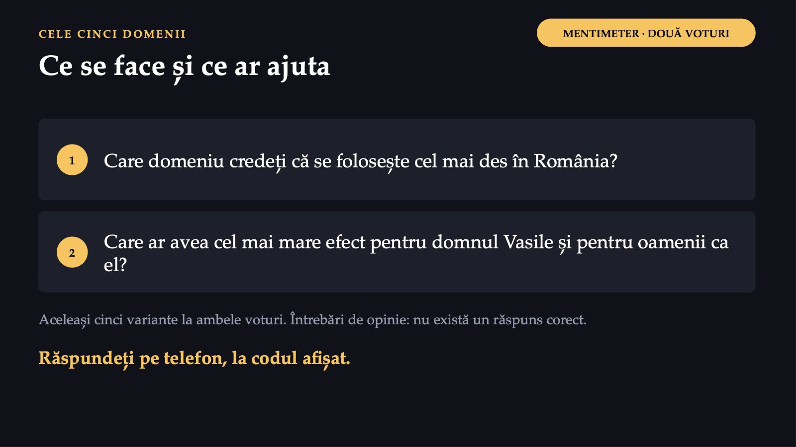
8 / 48Mediile de viață și sănătatea în toate politicile
![ȘCOALA, LOCUL DE MUNCĂ, ORAȘUL Mediile de viață și sănătatea în toate politicile MEDIUL DE VIAȚĂ Locul vieții de zi cu zi. Abordarea nu folosește școala pentru o prelegere: schimbă școala însăși. SĂNĂTATEA ÎN TOATE POLITICILE Toate sectoarele cântăresc sistematic efectele deciziilor asupra sănătății și a echității în sănătate. transport educație locuire taxe alimentație muncă Ministerul sănătății nu decide aici: e nevoie de angajamentul întregului guvern. Sursa: OMS, glosarul promovării sănătății, 2021.](diapozitive/C06/009.jpg) 9 / 48
9 / 48Carta de la Geneva pentru bunăstare
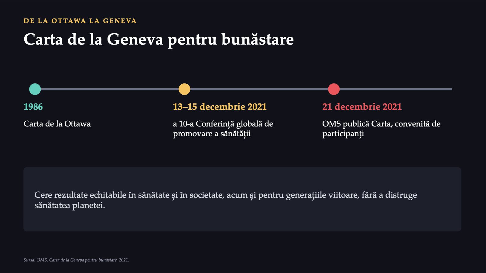
10 / 4830,8%
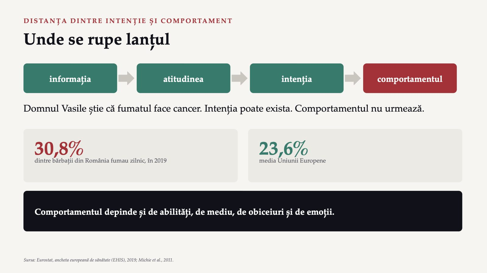
11 / 48Modelul convingerilor despre sănătate
 12 / 48
12 / 4830
![CE ARATĂ DOVEZILE O asociere nu este o cauză 30 de studii transversale: analiza sistematică din 2020, screeningul colorectal Susceptibilitatea, beneficiile și semnalele de acțiune erau asociate cu screeningul; barierele, invers. LIMITELE convingerile și comportamentul, măsurate în același moment comportament declarat, eșantioane de conveniență factorii sociodemografici și normele culturale apar numai ca factori modificatori Pentru mediu, cost și norme: un model mai cuprinzător. Sursa: Lau et al., 2020.](diapozitive/C06/013.jpg) 13 / 48
13 / 48Capacitate, oportunitate, motivație
![AL DOILEA MODEL · COM-B Capacitate, oportunitate, motivație Un comportament are loc numai atunci când persoana are capacitatea și oportunitatea de a-l face și este mai motivată pentru el decât pentru orice alt comportament. West și Michie, 2020 C Capacitatea psihologică și fizică: cunoștințe, abilități O Oportunitatea factorii externi care fac comportamentul posibil sau îl declanșează M Motivația procesele care dau energie și direcție comportamentului, nu doar deciziile conștiente Sursa: Michie, van Stralen și West, 2011; West și Michie, 2020.](diapozitive/C06/014.jpg) 14 / 48
14 / 48„Vreau să mă las” și țigara de după cafea
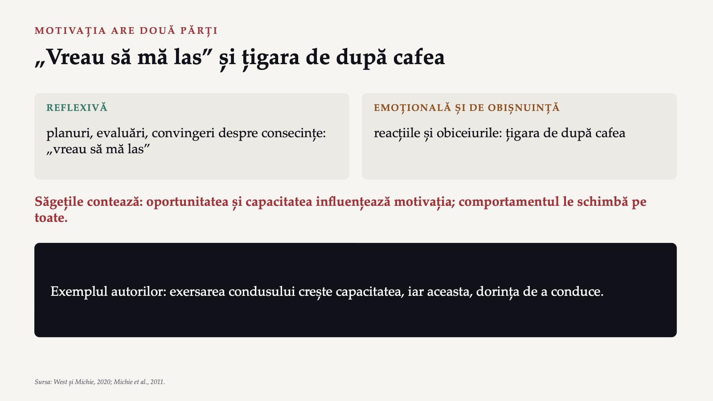
15 / 48Roata schimbării comportamentului
![ARTICOLUL DIN 2011 Roata schimbării comportamentului COM-B nouă funcții de intervenție șapte categorii de politici Din 19 cadre de clasificare analizate, niciunul nu acoperea totul. CELE ȘAPTE CATEGORII DE POLITICI • comunicarea și marketingul • ghidurile • măsurile fiscale • reglementarea • legislația • planificarea mediului fizic și social • furnizarea de servicii Întâi diagnosticul, apoi intervenția: dacă oamenii știu deja, educația nu corectează nimic. Sursa: Michie, van Stralen și West, 2011.](diapozitive/C06/016.jpg) 16 / 48
16 / 48Ce poate face o intervenție
 17 / 48
17 / 48Testul din sertar
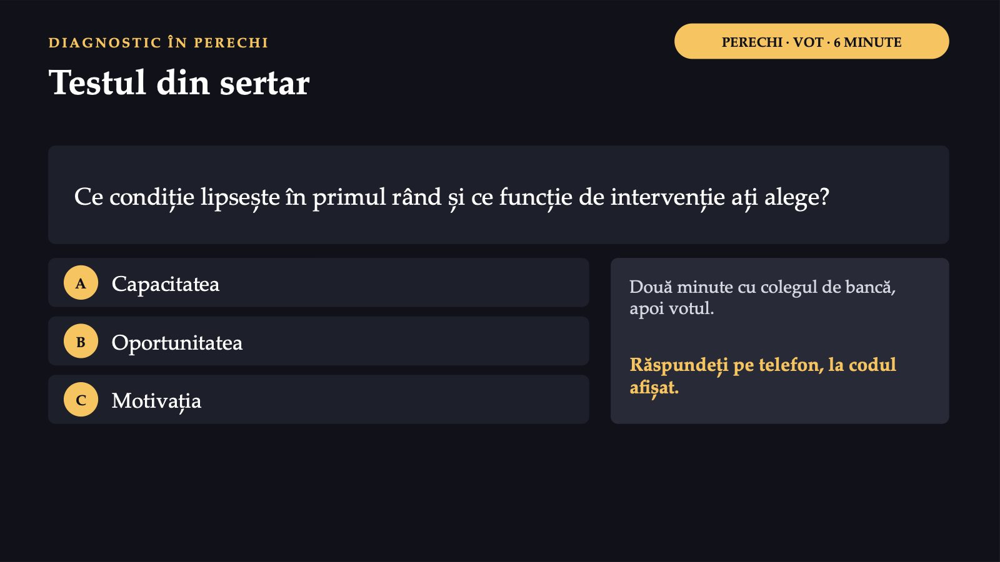
18 / 48Răspunsul apare după ședință
Răspunsul apare după ședință
Articolul fiicei, clipul tatălui
![ALFABETIZAREA ÎN SĂNĂTATE Articolul fiicei, clipul tatălui Cum judecăm informația despre sănătate? Cunoștințele și competențele care le permit oamenilor să găsească, să înțeleagă, să evalueze și să folosească informațiile și serviciile pentru sănătatea lor și a celor din jur. Ele sunt mediate de structurile organizaționale și de resursele disponibile. Nu ține numai de individ: guvernul, societatea civilă și serviciile trebuie să facă accesibilă informația de încredere. Sursa: OMS, glosarul promovării sănătății, 2021.](diapozitive/C06/020.jpg) 20 / 48
20 / 48Patru operații, trei domenii
 21 / 48
21 / 4847,6%
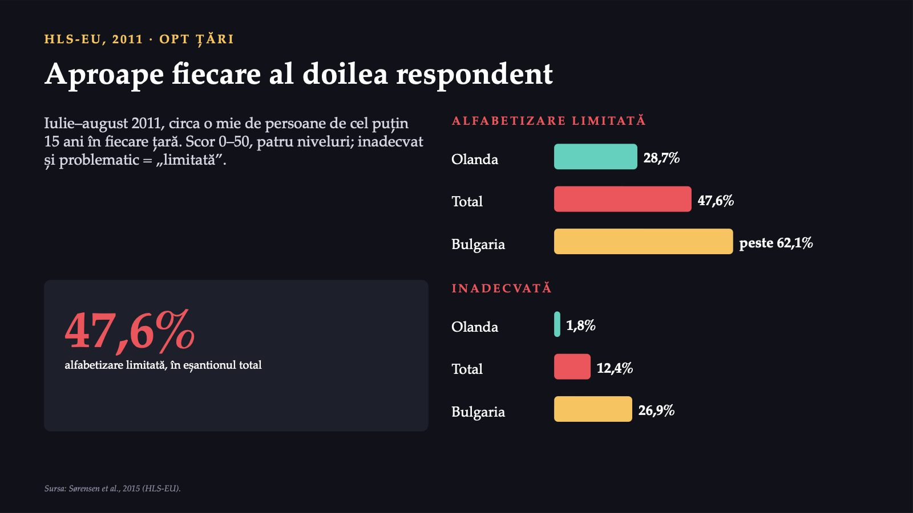
22 / 4817
![ROMÂNIA O cifră care lipsește HLS19 · NOIEMBRIE 2019 – IUNIE 2021 17 țări din Regiunea Europeană a OMS 42 445 de interviuri România nu a participat nici acum; procentul Bulgariei nu se transferă. Comparațiile între țări, cu prudență: metode diferite, design transversal. GRADIENTUL SOCIAL Alfabetizare limitată mai frecventă la lipsuri financiare, statut social scăzut, educație redusă, vârstă înaintată; în toate țările, în 2019–2021. Sursa: rezumatul raportului internațional HLS19, 2021; Sørensen et al., 2015.](diapozitive/C06/023.jpg) 23 / 48
23 / 48Recomandările anchetei din 2019–2021
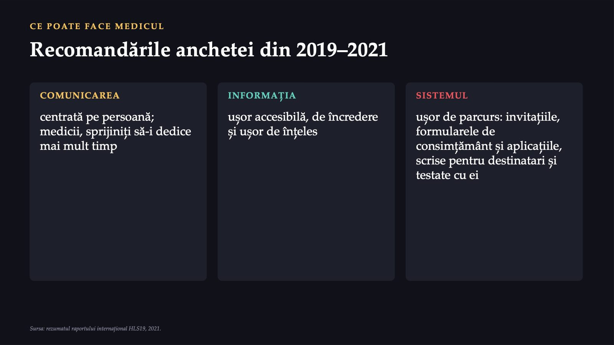
24 / 48Un mesaj pentru kitul din sertar
![MARKETINGUL SOCIAL Un mesaj pentru kitul din sertar Conceptele de marketing, integrate cu alte abordări, pentru a influența comportamente care aduc beneficii indivizilor și comunităților. PRODUSUL comportamentul precis: „înlocuiți o băutură îndulcită pe zi cu apă” PREȚUL bani, timp, efort, plăcere pierdută, jenă LOCUL unde și când: un kit trimis acasă elimină drumul la cabinet PROMOVAREA mesajul și canalul, pentru un public precis Nu o campanie de afișe: un proces, de la cercetarea publicului la testarea mesajului. Sursa: OMS, glosarul promovării sănătății, 2021.](diapozitive/C06/025.jpg) 25 / 48
25 / 48Patru teme, numai date verificate
![DATELE PENTRU ATELIER Patru teme, numai date verificate VACCINAREA HPV Printre cele mai cost-eficace intervenții (OMS): vaccinarea fetelor de 9–14 ani, una sau două doze. RENUNȚAREA LA FUMAT Fumatul zilnic la bărbați, în 2019: 30,8% în România, 23,6% în Uniunea Europeană. SCREENINGUL COLORECTAL După cincizeci de ani. Detaliile: în cursul despre screening. REDUCEREA CONSUMULUI DE SARE Recomandate de OMS: reformularea alimentelor, etichetarea pe fața ambalajului. Sursa: OMS, „Tackling NCDs”; Eurostat, ancheta europeană de sănătate (EHIS), 2019.](diapozitive/C06/026.jpg) 26 / 48
26 / 48Proiectați mesajul
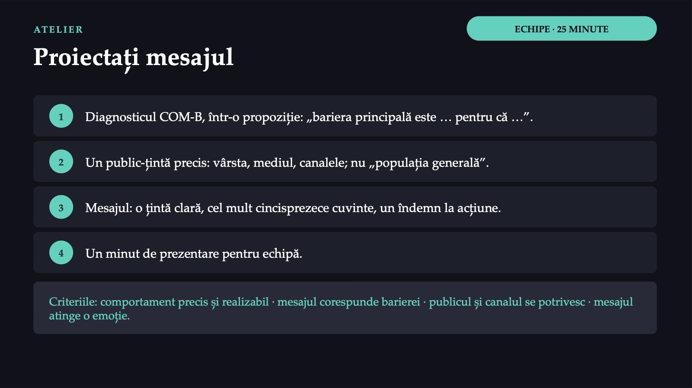
27 / 48Care mesaj vă convinge?
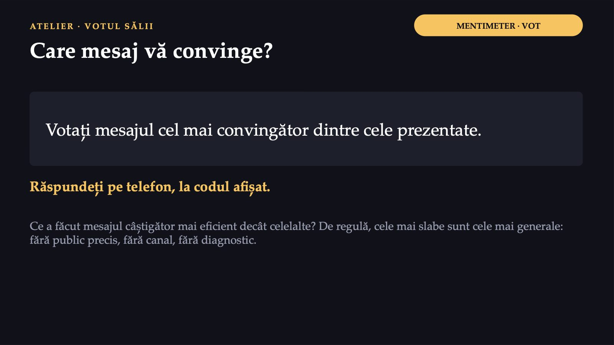
28 / 48„Nu mai are rost”
 29 / 48
29 / 481,2 miliarde
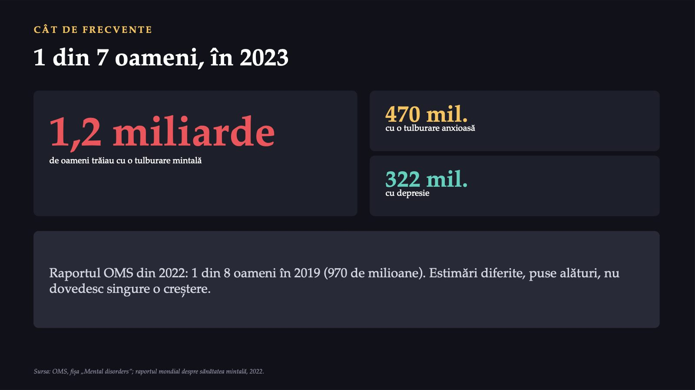
30 / 48Cel puțin două săptămâni
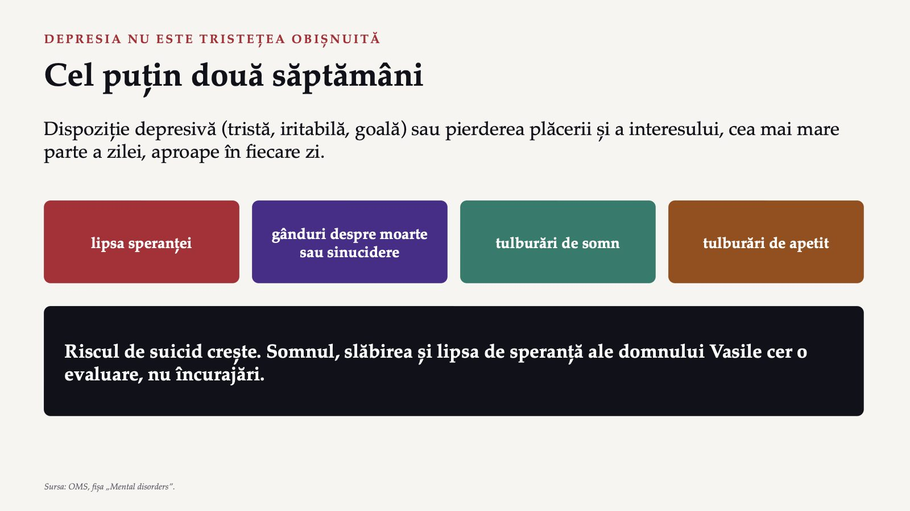
31 / 4815,6%
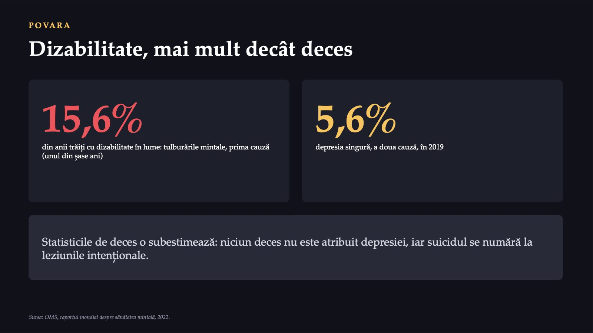
32 / 48Mai puține simptome declarate. De ce?
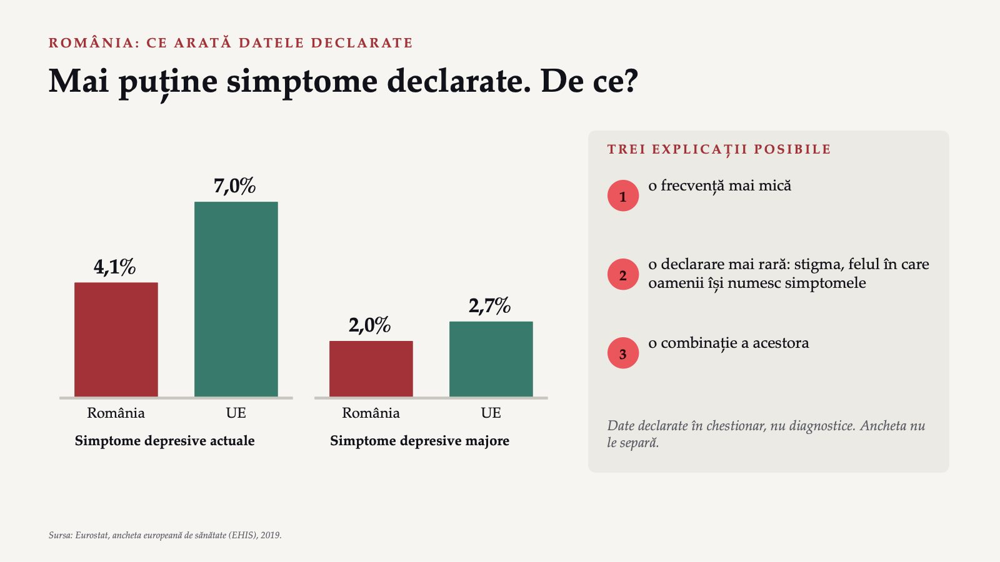
33 / 48727 000
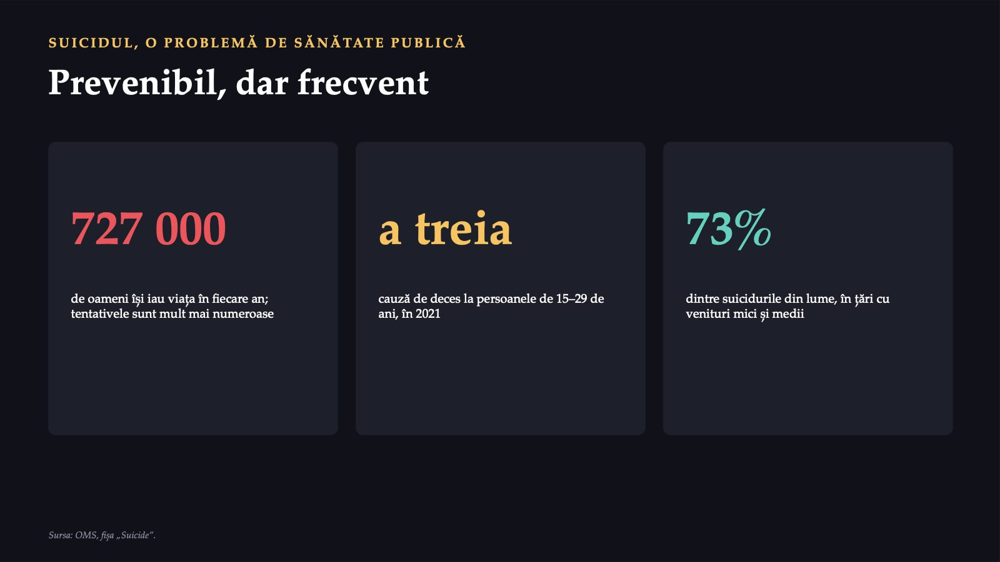
34 / 48De 5,9 ori mai mare la bărbați
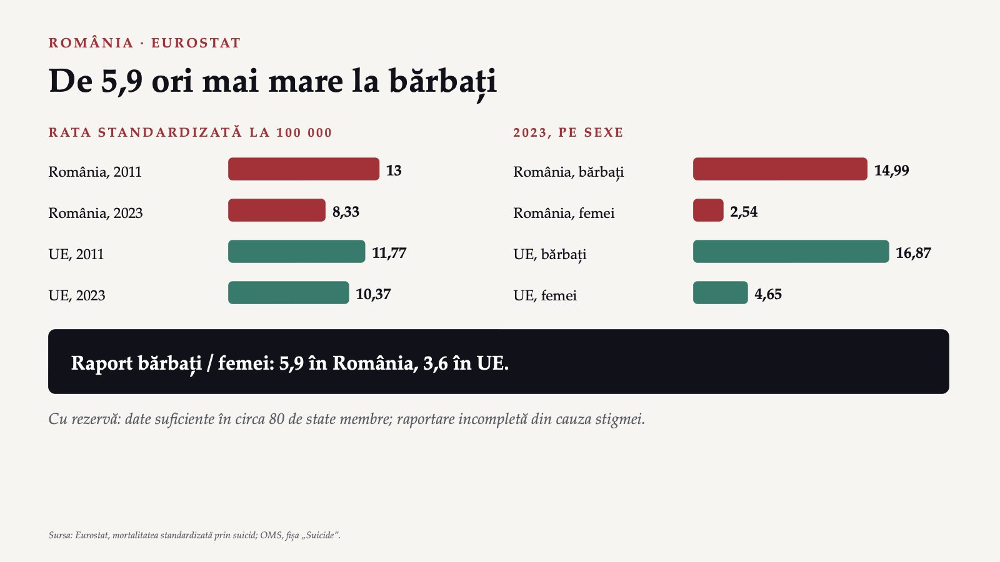
35 / 4838
![SUICIDUL POATE FI PREVENIT Patru intervenții LIVE LIFE 1 Limitarea accesului la mijloace: pesticide, arme de foc, anumite medicamente. 2 Relatarea responsabilă a cazurilor, în colaborare cu presa. 3 Abilitățile socio-emoționale ale adolescenților. 4 Identificarea, evaluarea, tratarea și urmărirea timpurie a celor afectați. Primele două acționează asupra întregii populații, fără ca cineva să ceară ajutor. 38 de țări raportează o strategie națională de prevenire a suicidului Sursa: OMS, fișa „Suicide”.](diapozitive/C06/036.jpg) 36 / 48
36 / 48Universală, în toate culturile
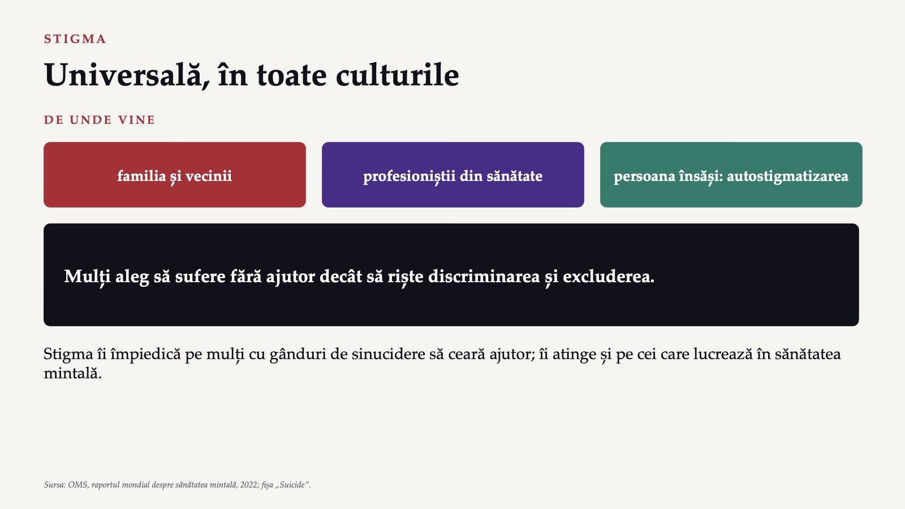
37 / 4840%
![DECALAJUL DE TRATAMENT Cine nu ajunge la îngrijire 40% dintre persoanele cu psihoză primesc îngrijire formală o treime dintre persoanele cu depresie sub 2% din bugetele de sănătate merg, în medie, la sănătatea mintală peste 70% din cheltuielile de sănătate mintală, în țările cu venituri medii: spitalele de psihiatrie Serviciile din comunitate rămân subfinanțate; stigma ține oamenii departe chiar unde serviciile există. Sursa: OMS, fișa „Mental disorders”; raportul mondial despre sănătatea mintală, 2022.](diapozitive/C06/038.jpg) 38 / 48
38 / 48Patru ținte pentru 2030
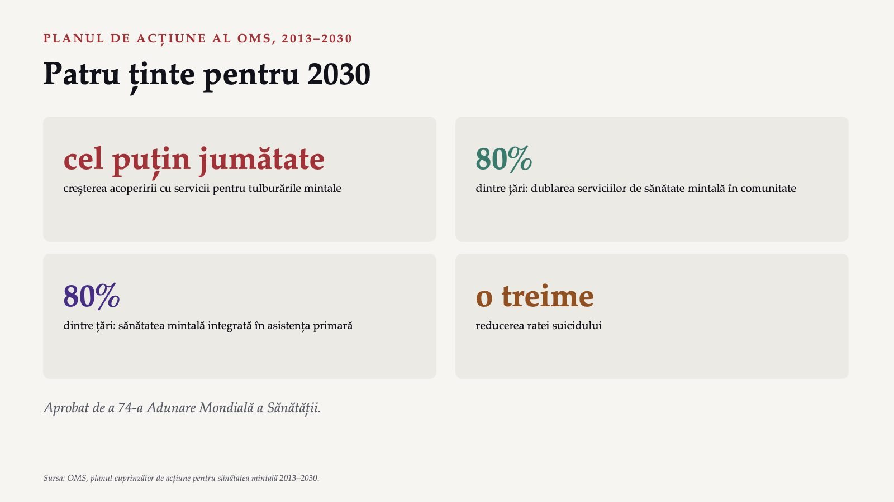
39 / 48Din spital spre comunitate și spre cabinet
 40 / 48
40 / 48O întrebare directă
![RISCUL SUICIDAR · mhGAP O întrebare directă „Nu mai are rost”: întrebați direct despre gândurile de sinucidere. EVALUAREA La orice persoană cu lipsă extremă de speranță sau cu o tulburare prioritară (de exemplu, depresia): gândurile, planurile, actele de autovătămare. Întrebarea nu provoacă autovătămarea. DACĂ RISCUL ESTE IMINENT mijloacele de autovătămare se îndepărtează mediu sigur: persoana nu rămâne singură, este supravegheată consultul unui specialist în sănătate mintală, unde există contactul și urmărirea se mențin Sursa: OMS, ghidul de intervenție mhGAP (conduita detaliată: în ghid).](diapozitive/C06/041.jpg) 41 / 48
41 / 48„I had a black dog”
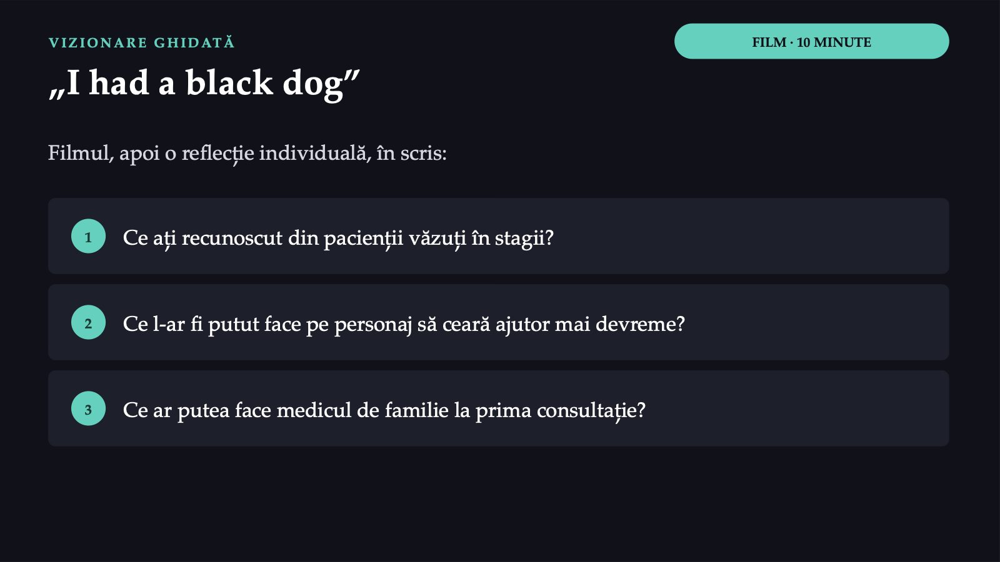
42 / 48Ce faceți întâi?
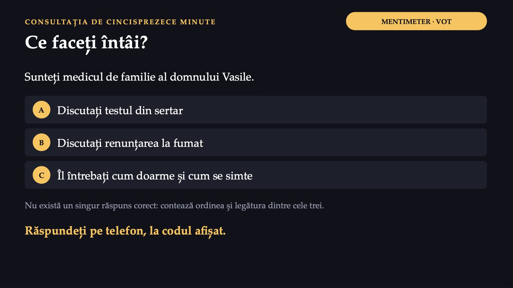
43 / 48Zece afirmații: adevărat sau fals?
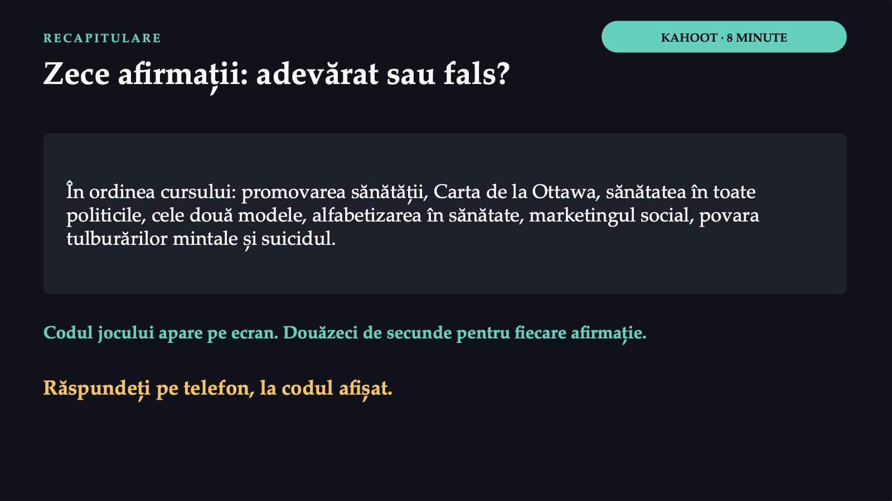
44 / 48Răspunsul apare după ședință
Răspunsul apare după ședință
Ce rămâne din cursul de azi
![DE REȚINUT Ce rămâne din cursul de azi 1 Promovarea sănătății: mai mult control asupra sănătății, prin informare și prin condițiile de viață. 2 Întâi diagnosticul: capacitatea, oportunitatea sau motivația; apoi intervenția. 3 Alfabetizarea în sănătate depinde și de instituții. 4 Aproape jumătate, cu alfabetizare limitată în 2011; România, în nicio anchetă. 5 Tulburările mintale: prima cauză de dizabilitate; cei mai mulți nu primesc îngrijire eficace. Domnului Vasile nu îi lipsește informația, ci cineva care să-l întrebe cum se simte.](diapozitive/C06/046.jpg) 46 / 48
46 / 48Ce faceți diferit, luni dimineață
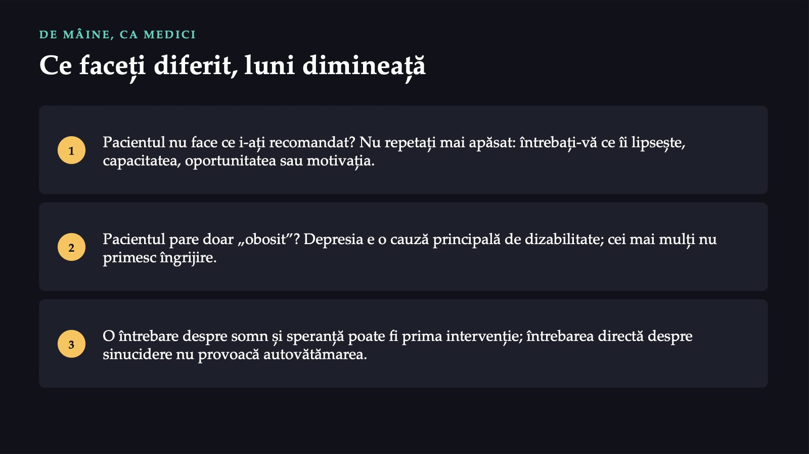
47 / 48Trei întrebări pentru final
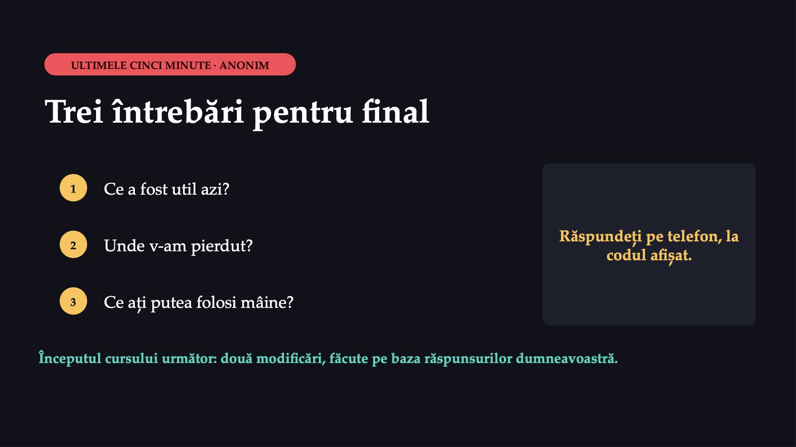
48 / 48Săgeți sau spațiu: navigare · O: vedere de ansamblu · N: notele prezentatorului · F: ecran complet · Esc: închidere